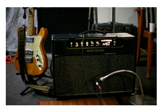
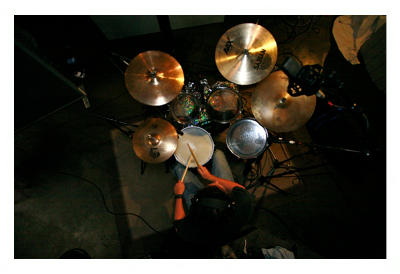
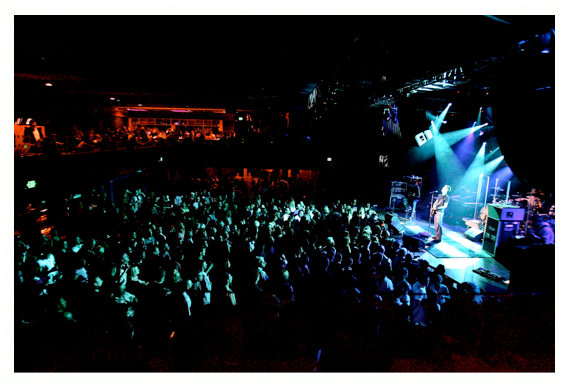
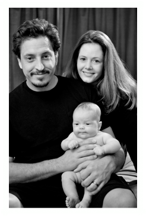
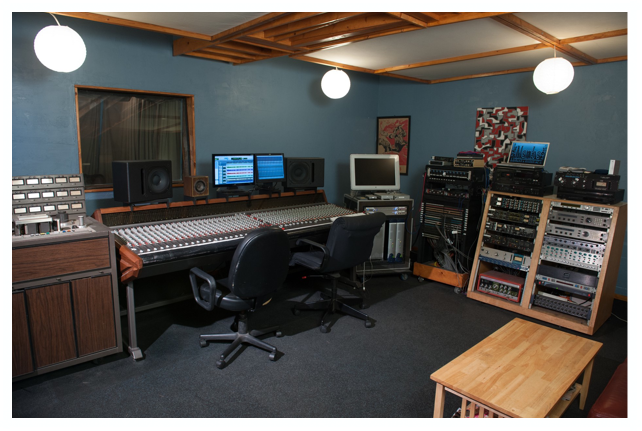

![In 1997 I moved to Long Beach and took a position as studio manager at Mambo Sound and Recording where I’ve been working ever since. I’ve also done stints as production manager, sound engineer, and talent buyer for many concert venues including The Vault, The Terrace Theater, Price’s Foothill, The Carpenter Center, House of Blues Anaheim, and The Blue Café. Over the years I have recorded and mixed hundreds of projects for CD, DVD & broadcast and have mixed Front of House & monitors for thousands of live performances.](Bio_files/shapeimage_4.png)